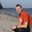

FOSSGIS2010 - 22
FOSSGIS 2010
Freie und Open Source Software für Geoinformationssysteme
| Speakers | |
|---|---|
|  | Martin Garbe |
| Schedule | |
|---|---|
| Day | Donnerstag - 2010-03-04 |
| Room | Großer Hörsaal (Geb. 66, E33/34) |
| Start time | 14:30 |
| Duration | 00:30 |
| Info | |
| ID | 55 |
| Event type | Lecture |
| Track | OSM-Vorträge |
| Language used for presentation | German |
Zusammenarbeit zwischen OpenStreetMap und der Hansestadt Rostock

Die Zusammenarbeit zwischen dem OpenStreetMap (OSM) Projekt und Städten ist sehr unterschiedlich ausgeprägt. Von Ablehnung bis konstruktiver Zusammenarbeit ist alles vertreten. Die Hansestadt Rostock, in Form des Kataster-, Vermessungs- und Liegenschaftsamtes (KVLA), steht freien Daten, Projekten und dem Web 2.0 offen gegenüber. Dies ist eine wichtige Voraussetzung für eine Zusammenarbeit mit OpenStreetMap. Die Stadt Rostock hat OSM anfangs ihre Straßenliste zur Verfügung gestellt. Es folgte Feedback durch die Community in Form von Meldungen über fehlende oder falsch angebrachte Straßenschilder. Daraufhin hat die Stadt das Kopieren des amtlichen Stadtplans gestattet. Ausgenommen vom Kopieren waren die exakten Gebäudeumrisse, denn diese sind Teil eines Geschäftsmodells. Von Seiten der Stadt gab es nun den Vorschlag mit Unschärfe versehene Umrisse freizugeben. Diese Unschärfe sichert der Stadt einerseits ihr Geschäftsmodell und ist andererseits noch ausreichend klein für die Verwendung in OpenStreetMap. Auch hier gab es wieder Feedback von der Community über fehlende oder nicht mehr existierende Gebäude. Als weiteres Projekt wurden ältere Daten von Gebäudehöhen veröffentlicht. Auch hier behielt die Stadt die neueren und genaueren Daten für sich, konnte jedoch ihren Beitrag zu freiem Wissen leisten. Als Resultat kann z.B. in OSM-3D ein Stadtüberflug mit realen Gebäudehöhen durchgeführt werden. Neben den oben erwähnten Veröffentlichungen gab es noch weitere kleine Datenspenden. Das alles zeigt, dass Städte bzw. öffentliche Einrichtungen allgemein nicht nur in der Geberposition agieren, sondern auch davon profitieren.
| Vorträge | Vorträge (Meist 20 Minuten plus Fragen+Antworten) |
| OSM-Vorträge | Vorträge im OSM-Teil (Meist 20 Minuten plus Fragen+Antworten) |
| Workshops | Kostenpflichtige Workshops am Rechner (90 Minuten) |
| Community Sessions | Moderierte Vortrags- und Diskussion-Veranstaltung (60-90 Minuten) |
| Anwendertreffen | Treffen für Anwender bestimmter Software |
| Developer-Treffen | Treffen für Entwickler bestimmter Software |